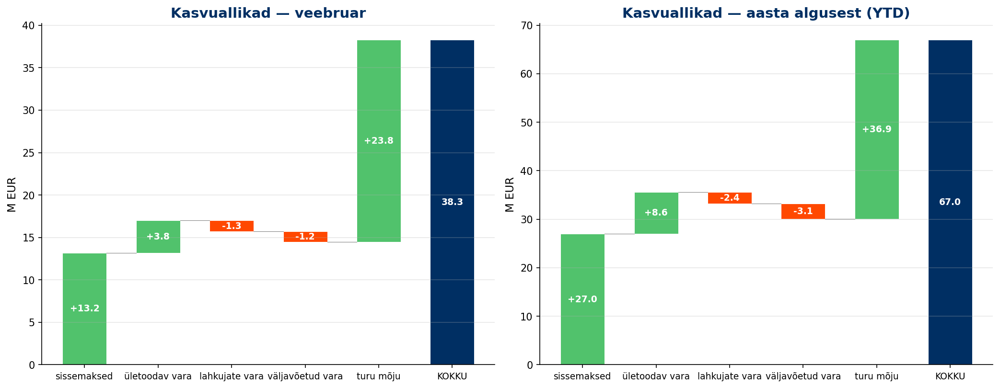
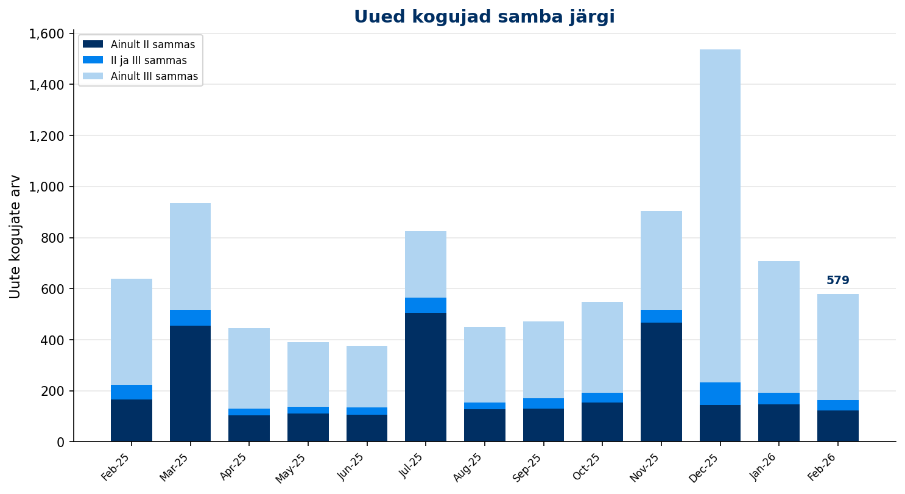
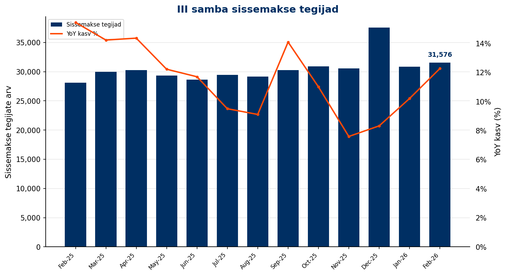
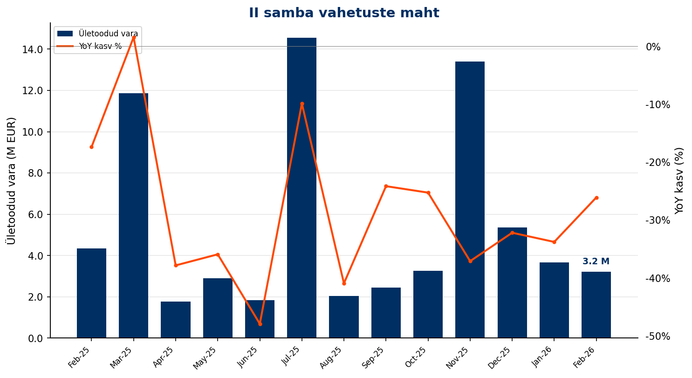
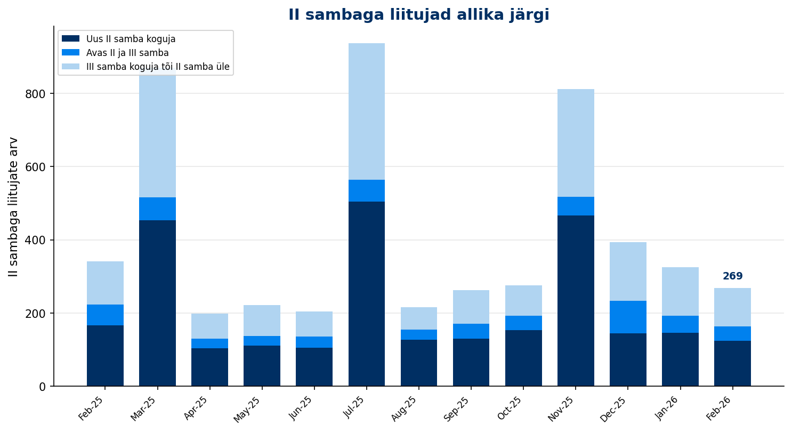
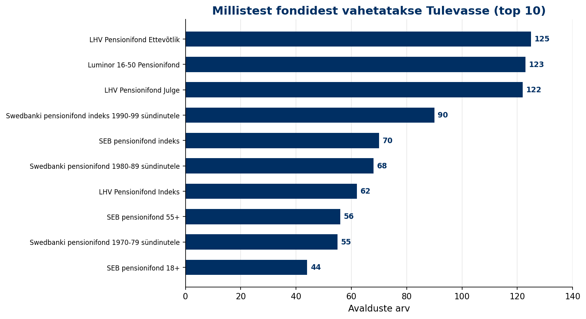
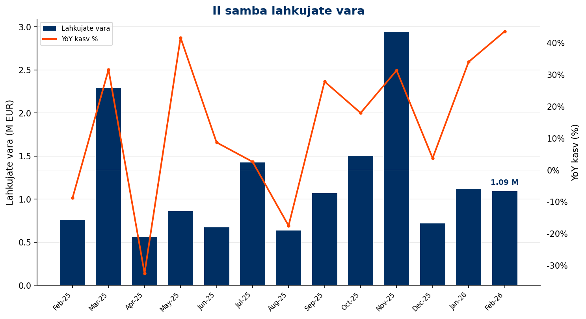
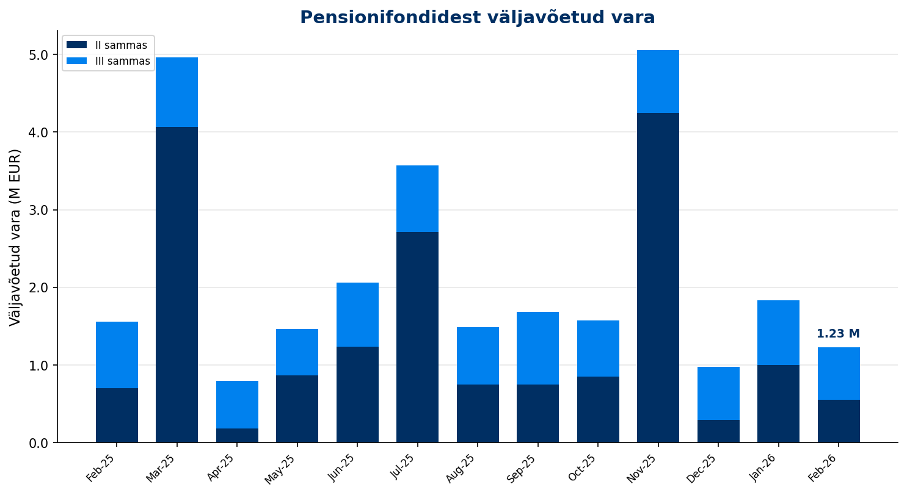
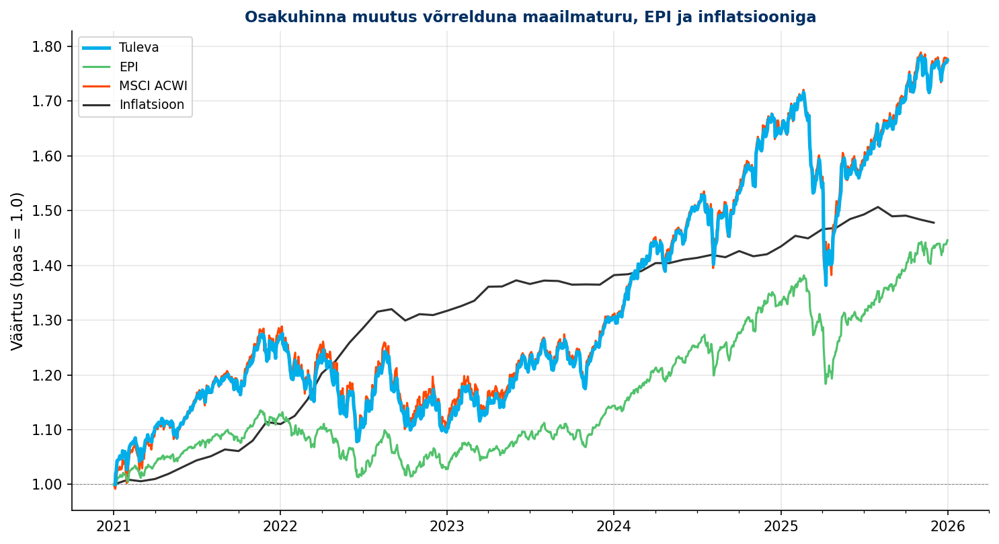

Jaanuar 2026
Aruande kuupäev: 2026-02-17
Jaanauris kasvas varade maht tänu suurematele sissemaksetele ja turu tõusule. 12-kuu jooksev kasvumäär sissemaksetest ja sisse vahetamistest oli 22%.
| KPI | Jaanuar 2026 |
|---|---|
| AUM kuu lõpus | 1416 M EUR |
| AUM 12 kuu kasv | 25% |
| sh sissemaksetest ja vahetustest | 22% |
Sissemaksed moodustavad järjest suurema osakaalu meie kasvust. Ühelt poolt sellepärast, et vahetustega laekuva vara hulk ei ole kasvanud, aga teiselt poolt sellepärast, et sissemaksed kasvavad tublisti.

Meie kogujate arv kasvab. Kogujate arv on küll pigem "vanity metric", sest see võtab arvesse nii inimese, kes kogub täiel määral mõlemas sambas kui ka selle, kes 2021. aastal 5 eurot III sambasse pani ja rohkem ei kogu. Mingil määral näitab ta siiski kohest potentsiaali inimeste näol, kelle e-maili aadress meil juba olemas on.

| KPI | Jaanuar 2026 |
|---|---|
| Kogujate arv | 83,819 |
| sh ainult II sammas | 12,728 |
| sh ainult III sammas | 45,387 |
| sh II ja III sammas | 25,704 |
| YoY kasv | 8.1% |
Meie peamine tee uute kogujateni on jätkuvalt III sammas. Meie hinnangul igast 3 uuest III samba kogujast, 2 alustab just meie juures.

| KPI | Jaanuar 2026 | YTD |
|---|---|---|
| Uued kogujad | 709 | 709 |
| YoY muutus | -16.5% | |
| sh uued II samba kogujad | 325 | 325 |
| sh uued III samba kogujad | 671 | 671 |
Kõrgema II samba maksemäära mõju peaks hakkama ilmnema veebruaris, aga II samba sissemaksed tegid sellegipoolest eelmise kuuga võrreldes ligi 10% hüppe. Tõenäoliselt on see mõjutatud detsembris makstud jõulupreemiatest. Ka III samba sissemaksed on kasvanud (+10% võrreldes eelmise aasta jaanuariga).

| KPI | Jaanuar 2026 | YTD |
|---|---|---|
| II samba sissemaksed | 8.0 M EUR | 8.0 M EUR |
| III samba sissemaksed | 5.9 M EUR | 5.9 M EUR |
Kolmanda samba sissemakseid ei ole kõrgem II samba maksemäär jätkuvalt vähendanud. Jaanuar on traditsiooniliselt kuu, kus tuletame meelde häid uusaasta lubadusi, et hakkame rohkem säästma. Tavaliselt see aitab.

| KPI | Jaanuar 2026 | YTD |
|---|---|---|
| Sissemakse tegijate arv | 30,856 | 32,931 |
| YoY kasv | 10.2% | |
| Püsimakse tegijate osakaal | 76.0% |
| KPI | Jaanuar 2026 | YTD |
|---|---|---|
| Maksemäära tõstnud | 173 | 173 |
| Maksemäära langetanud | 55 | 55 |
Vahetusavalduste arv ei kasva. Tundub, et oleme jõudnud mingi barjäärini, mis võib olla näiteks põhjustatud järjest suuremast usaldushüppest, mida nt 100 000 euro ületooja peab ületama.

| KPI | Jaanuar 2026 | YoY | YTD |
|---|---|---|---|
| Sissevahetajate arv | 249 | -40.1% | 249 |
| Ületoodud vara | 3.5 M EUR | -37.3% | 3.5 M EUR |
Me konverteerime jätkuvalt vähem III samba kogujaid II sambasse kui uusi III samba kogujaid lisame. Tõenäoliselt on siin peidus veel varu vahetusavalduste arvu suurendamiseks.

Meie peamiseks "doonoriks" on aegade algusest olnud LHV fondid. Kui eelmine aasta oli LHV fondidel aegade parim tulemus siis väljavoolu see nende fondidest peatanud ei ole. Võib küll arvate, et ilma selleta oleks ehk tulemus meie jaoks isegi parem olnud.

Lahkujate arv ei ole kasvanud. Oma raha väljavõtjate maht püsib samuti stabiilsena.

Fondidesse kogunenud vara on mõeldud kasutamiseks. Võime ju nuriseda, et kogujad jätkuvalt kasutavad vara peamiselt ühekordselt väljamakseks ja sedagi enne pensioniea saabumist, aga see on nende õigus. Meie asi on püüda neil aidata raha (maksu-)efektiivsemalt kasutusele võtta. Täna oleme veel õppimise faasis.

| KPI | Jaanuar 2026 | YoY | YTD |
|---|---|---|---|
| II samba lahkujate vara | 1.1 M EUR | 34.0% | 1.1 M EUR |
| II samba väljujate vara | 1.0 M EUR | 36.4% | 1.0 M EUR |
| III sambast väljavõetud vara | 0.9 M EUR | 43.7% | 0.9 M EUR |
Maailma aktsiaturg teeb seda, mida ta alati on teinud: kõigub. Viie aasta perspektiivis on aktsiaturud ja nendega koos kasvavad indeksfondid ületanud nii EPI kui inflatsiooni tulemust.

Nagu alati tootlusega: vaadata tuleb võimalikult pikka aega ja ikka võrdluses oluliste benchmarkidega.

Meie finantsid on tugevad, mis lubab veebruraris uuesti üle vaadata tasud. Ei tasu unustada, et liikmete tulu (litsentsitasu) kajastub meil nüüd muutuvkuludes ehk vähendab seda brutomarginaali, millest fondivalitseja katab oma püsikulud.
| KPI | Jaanuar 2026 | YoY |
|---|---|---|
| Brutomarginaal pärast litsentsitasu | 148,512 EUR | 2% |
| Tööjõukulud | -79,031 EUR | -22% |
| Mitmesugused tegevuskulud | -18,747 EUR | -11% |
| Ebitda/ärikasum | 50,734 EUR | 116% |
| Puhaskasum | 44,434 EUR | 136% |
| Litsentsitasu ühistule | 59,080 EUR | 26% |
Aruanne genereeritud Tuleva Reporting Engine'iga